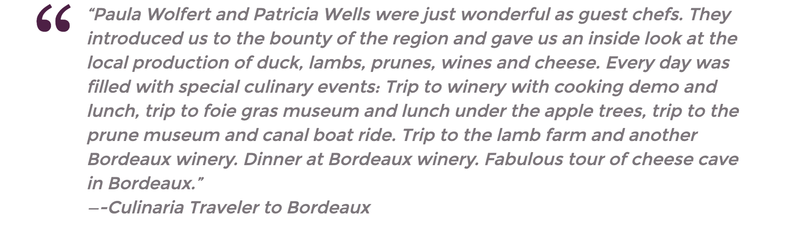
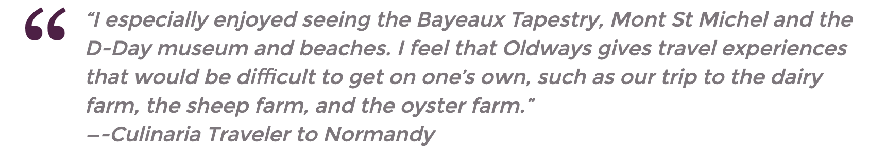

goodness
goodnessHome> Programs >Culinary Travel
WHY TRAVEL WITH OLDWAYS?
Oldways “Culinarias” are extraordinary culinary tours, planned with our firm belief that the heart of any culture can be illuminated by exploring its food, wine, and culinary traditions. Our respected place in the culinary world, and our long-standing relationships with international chefs, restaurateurs, and food and wine producers, means that we’re able to create one-of-a-kind travel itineraries of unprecedented reach and depth that embrace traditional food and wine customs, educational programs, and elegant culinary activities.
FOUR GOOD REASONS TO TRAVEL WITH OLDWAYS
1. A Small Group of Congenial Travelers
Oldways trips are limited to about three dozen participants – just the right number so that you can interact with a variety of interesting people, without feeling that you’re part of a crowd. Although our travelers are a diverse group, they all share a common love of food and culinary traditions.
2.Culinary Experts to Guide You
Imagine how much you can learn about the foodways of a region, with someone along who can explain local ingredients at mealtimes, interpret the wares on offer while you walk through a vibrant public market, or guide you through a tasting of unfamiliar spices. Each Oldways Culinaria features a well-known culinary expert, such as a chef or cookbook author, intimately familiar with the foods and flavors of the area. Past “trip chefs” have included Ana Sortun, Paula Wolfert, Susan Herrmann Loomis, Jody Adams, Ihsan Gurdal, Nancy Harmon Jenkins, Claudia Roden, and Patricia Wells. Our trips also include cooking demonstrations where you’ll see first-hand how signature local dishes are made. We’ll also provide the recipes, so you can savor these dishes at home and share them with family and friends.
3.Historic and Cultural Context
While the focus is on food during Oldways trips, you’ll also learn about the historic and cultural context that helped shape local culinary traditions. Visits to museums, ancient ruins, and artisan crafters provide a useful counterpoint to food-related activities. On every trip you’ll enjoy fascinating facts from local historical guides – plus insights from Oldways staff, based on our two decades of international culinary travel.
ADDITIONAL TESTIMONIALS FROM OLDWAYS TRAVELERS
“You all worked together to make it a memorable trip where we only had to show up and enjoy the experience.
That is no easy feat.”
~ Culinaria Traveler to Morocco
“Susan Loomis, our guest chef, added greatly to our experience of the region through our market day tour, daily excursions to dairy/ sheep/oyster farms and cooking demonstrations. I read her book and tried several recipes before traveling and so felt I knew her already when we met in Honfleur! The size of the group is perfect – one bus load!”
~ Culinaria Traveler to Normandy
“Having been on several Oldways trips the “trip chefs” were a definite bonus. They answered questions about the foods, procurement, history and numerous other questions you think of when reading cookbooks but can’t ask. They help one understand the background of foods and how they evolve in today’s world.”
~ Culinaria Traveler to Istanbul, Piedmont, Sicily, Tuscany
“Our trip to Normandy with Oldways was a unique experience. We learned about the people and culture of Normandy through a focus on the food of the region. Our lunches and dinners were multi-course regional foods that were beautifully presented. The restaurants were all wonderfully different but it is clear that they were selected for their quality and representation of the local food. At each meal, we were given an informative overview of the food and its preparation by Susan Herrmann Loomis.”
~ Culinaria Traveler to Normandy
Olways
266 Beacon Street Suite 1
Boston , MA 02116
TEL 617-421-5500
FAX 617-421-5511
info@oldwaysspt.org